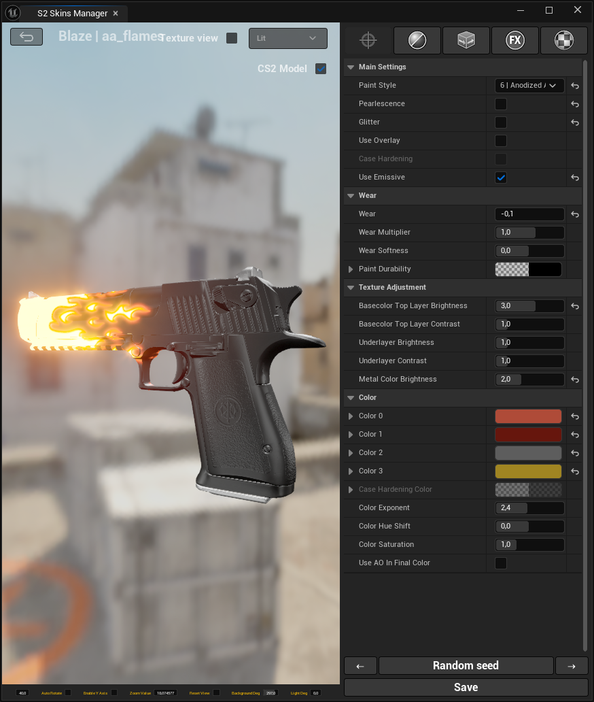
-
Просмотр и управление большой библиотекой скинов
-
Поддержка моделей CS2 и CS:GO
-
Полноценная настройка материалов в реальном времени
- Поддержка стилей: Anodized, Spraypaint, Case Hardened и других
-
Режимы Glitter, Pearlescence, Overlay, Spraypaint Halftone и другие
-
Анимированные UV для паттернов с готовыми пресетами
-
Самообновляемая система добавления новых скинов
Browse and manage a large skin library
Support for CS2 and CS:GO models
Full real-time material customization
- Support for styles: Anodized, Spraypaint, Case Hardened, and more
Modes: Glitter, Pearlescence, Overlay, Spraypaint Halftone, and more
Animated UVs for patterns with ready-to-use presets
Self-updating system for adding new skins
- Unreal Engine 5.6 или новее
- PyToolkit plugin (версии 1.8 и выше)
Установленная Counter-Strike 2
Утилита Source2Viewer CLI для декомпиляции моделей и текстур
Свободное место на диске (первый запуск может импортировать несколько тысяч текстур)
- Unreal Engine 5.6 or newer
- PyToolkit plugin (version 1.8 or higher)
Installed Counter-Strike 2
The Source2Viewer CLI utility for decompiling models and textures
Available disk space (the first launch may import several thousand textures)
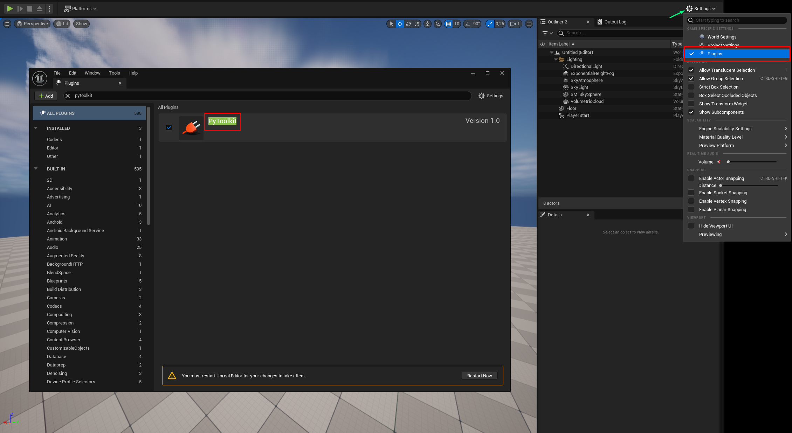
Скачайте и распакуйте плагин PyToolkit (минимум 1.8 версии) в папку Plugins в корневой директории Unreal Engine (C:\Program Files\Epic Games\UE_5.6\Engine\Plugins).
Запустите Unreal Engine и включите следующие плагины (в меню Edit > Plugins):
- Editor Scripting Utilities
- Python Editor Script Plugin
- Python Foundation Packages
- Http Blueprint
- PyToolkit
Затем перезапустите движок.

- Скачайте архив с виджетом
- Распакуйте архив в любую папку — это уже готовый проект. Если нужно добавить виджет в существующий проект, откройте в скачанном проекте папку Content и скопируйте все её файлы в папку Content вашего проекта.
- Откройте проект.
- В Content Browser найдите папку Widgets. Кликните по виджету S2 Skins Manager правой кнопкой мыши и выберите Run Editor Utility Widget.
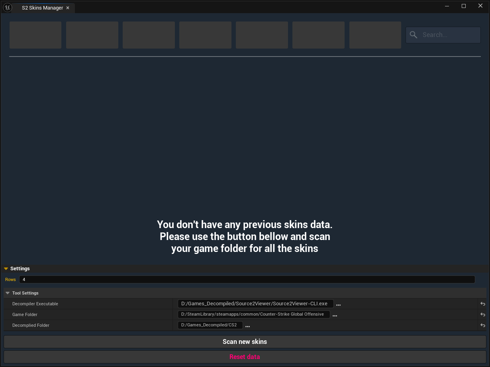
-
Decompiler Executable
Путь к декомпилеру Source2Viewer CLI (в репозитории обычно называется cli-windows-x64.zip. Нужно извлечь всё из архива и указать путь к.exeфайлу.). -
Game Folder
Путь к установленной CS2 (например: D:/SteamLibrary/steamapps/common/Counter-Strike Global Offensive). -
Decompiled Folder
Любая папка, куда будут складываться декомпилированные файлы из игры (главное, чтобы на диске хватало места).
Download and extract the PyToolkit plugin (version 1.8 or higher) into the Plugins folder in the Unreal Engine root directory (C:\Program Files\Epic Games\UE_5.6\Engine\Plugins).
Launch Unreal Engine and enable the following plugins (in Edit > Plugins):
- Editor Scripting Utilities
- Python Editor Script Plugin
- Python Foundation Packages
- Http Blueprint
- PyToolkit
Then restart the engine.
- Download the widget archive
- Extract the archive to any folder — this is a ready-to-use project. If you need to add the widget to an existing project, open the Content folder in the downloaded project and copy all its files into your project's Content folder.
- Open the project.
- In the Content Browser, locate the Widgets folder. Right-click the S2 Skins Manager widget and select Run Editor Utility Widget.
Decompiler Executable
Path to the Source2Viewer CLI decompiler (typically named in the repository as cli-windows-x64.zip. You need to extract everything from the archive and specify the path to the.exefile).Game Folder
Path to your installed CS2 directory (for example: D:/SteamLibrary/steamapps/common/Counter-Strike Global Offensive).Decompiled Folder
Any folder where the decompiled game files will be stored (make sure you have sufficient disk space).
Если возникают ошибки — убедитесь, что:
- Виджет установлен по правильному пути в проекте;
- Включены все необходимые плагины;
- Используется Unreal Engine версии 5.6 или выше (в имени архива с виджетом указана минимально нужная версия движка);
- Декомпилер обновлён до последней версии.
Если декомпилер не работает, можно попробовать использовать DEV версию.
If you encounter errors, make sure that:
- The widget is installed in the correct project directory;
- All required plugins are enabled;
- You are using Unreal Engine version 5.6 or higher (the minimum required version is indicated in the widget archive name);
- The decompiler is updated to the latest version.
If the decompiler still doesn't work, try using the DEV version.
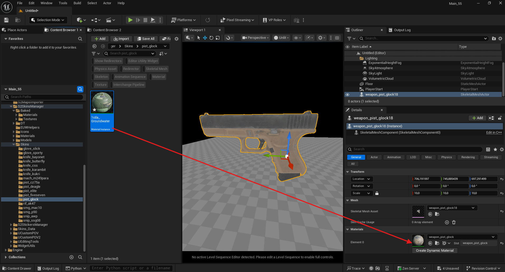
После сохранения (или запекания — для старых перчаток) материал скина появляется в Content Browser.
Чтобы применить материал к оружию или перчаткам, нужно:
- перетащить материал прямо на модель в окне просмотра (Viewport),
- либо назначить его вручную в панели Details, заменив соответствующий слот материала, как показано на скриншоте выше.
After saving (or baking — for older gloves), the skin material will appear in the Content Browser.
To apply the material to a weapon or gloves, you need to:
- drag and drop the material directly onto the model in the Viewport,
- or assign it manually in the Details panel by replacing the corresponding material slot, as shown in the screenshot above.
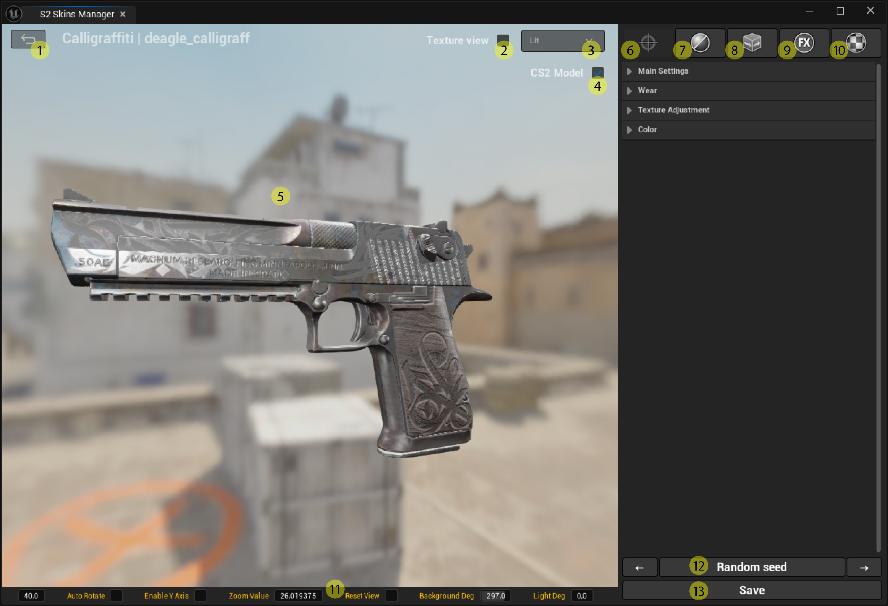
- Кнопка возврата (Back) — возвращает пользователя к списку скинов.
- Флаг “Texture View” — показывает UV развертку.
- Падающее меню — переключатель режима отображения (Lit, Roughness, Metallic и др.).
- Флаг “CS2 Model” — включает отображение модели оружия версии CS2.
- Окно предпросмотра — реалтайм-отображение материала и всех изменений. Поддержка вращения, зума и смены угла обзора
- Основные настройки материала
- Параметры отображения материала — настройка Roughness / Metalness
- Настройка UV паттернов и потертостей
- FX-эффекты — настройки Glitter, Case Hardened, Pearlescence, Overlay, Halftone и Emissive.
- Текстуры.
- Панель управления камерой и светом.
- Random Seed — генерация случайного UV для паттернов.
- Save — сохранение финального Material Instance для дальнейшего использования.
- Back Button — returns the user to the skin list.
- "Texture View" Toggle — displays the UV layout.
- Dropdown Menu — switches the display mode (Lit, Roughness, Metallic, etc.).
- "CS2 Model" Toggle — enables the CS2 weapon model view.
- Preview Window — real-time display of the material and all changes. Supports rotation, zoom, and camera angle adjustment.
- Core Material Settings
- Material Display Parameters — Roughness / Metalness adjustment
- UV Pattern and Wear Settings
- FX Effects — settings for Glitter, Case Hardened, Pearlescence, Overlay, Halftone, and Emissive.
- Textures
- Camera and Lighting Controls
- Random Seed — generates random UVs for patterns.
- Save — saves the final Material Instance for further use.
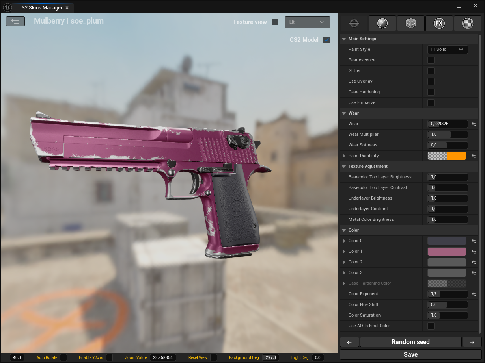
Main Settings
Paint Style — определяет базовый стиль рендеринга скина. От выбранного стиля зависит набор доступных параметров, логика наложения паттернов и поведение материала.Pearlescence — включает перламутровый эффект. Цвет поверхности меняется в зависимости от угла обзора и освещения. Используется для скинов с выраженным «переливающимся» покрытием.
Glitter — активирует эффект блесток в материале. Добавляет микроскопические отражающие элементы, создающие эффект искрящейся поверхности.
Use Overlay — включает дополнительный слой поверх основного материала. Используется для графических элементов или эффектов, не влияя на базовый слой скина.
Case Hardening — активирует режим имитации закалки металла. Формирует характерный многоцветный узор с плавными цветовыми переходами.
Use Emissive — включает самосветящийся слой материала. Позволяет добавить элементы, светящиеся независимо от освещения сцены.
Wear
Wear — основной параметр износа покрытия. Определяет степень стирания краски и проявления нижнего слоя материала.
Wear Multiplier — множитель износа. Усиливает или ослабляет влияние параметра Wear без изменения его базового значения.
Wear Softness — контролирует плавность переходов между изношенными и неизношенными участками. Низкие значения дают резкие края, высокие — более мягкий износ.
Paint Durability — маска прочности покрытия. Определяет, какие области поверхности изнашиваются быстрее, а какие дольше сохраняют краску.
Texture Adjustment
Basecolor Top Layer Brightness — управляет яркостью верхнего цветового слоя (скина).
Basecolor Top Layer Contrast — регулирует контраст верхнего цветового слоя, делая рисунок более резким или более мягким.
Underlayer Brightness — задает яркость нижнего слоя материала (оружия).
Underlayer Contrast — управляет контрастом нижнего слоя материала.
Metal Color Brightness — управляет яркостью на металлических областях скина.
Color
Color 0 (Base Coat) — базовый слой краски, который покрывает все окрашиваемые поверхности оружия. Является основой для всех последующих цветовых слоёв и всегда применяется первым.
Color 1 (Red Mask) — цвет, накладываемый поверх базового слоя с использованием красного канала паттерна в качестве маски.
Color 2 (Green Mask) — цвет, накладываемый поверх слоя Red Mask с использованием зелёного канала паттерна в качестве маски.
Color 3 (Blue Mask) — цвет, накладываемый поверх слоя Green Mask с использованием синего канала паттерна в качестве маски. Является финальным цветовым слоем в последовательности наложения.
Case Hardening Color — работает только со стилем Case Hardening. Определяет, какой из цветовых слоёв должен быть заменен эффектом Case Hardening.
Color Exponent — усиливает глубину и насыщенность цветов без прямого изменения яркости.
Color Hue Shift — сдвигает оттенок всей цветовой гаммы по цветовому кругу.
Color Saturation — управляет насыщенностью цветов. Низкие значения делают цвет более приглушенным, высокие - более ярким.
Use AO In Final Color — учитывает текстуру Ambient Occlusion при формировании финального цвета, добавляя глубину и визуальный объем.
Main Settings
Paint Style — defines the base rendering style of the skin. The selected style determines the available parameters, pattern blending logic, and overall material behavior.Pearlescence — enables a pearlescent effect. The surface color shifts depending on the viewing angle and lighting conditions. Used for skins with a pronounced iridescent finish.
Glitter — enables a glitter effect in the material. Adds microscopic reflective particles, creating a sparkling surface appearance.
Use Overlay — enables an additional layer on top of the base material. Used for graphical elements or effects without affecting the underlying skin layer.
Case Hardening — activates a metal hardening simulation mode. Generates a characteristic multicolor pattern with smooth color transitions.
Use Emissive — enables a self-illuminated material layer. Allows adding elements that glow independently of scene lighting.
Wear
Wear — the primary wear parameter. Controls the level of paint erosion and exposure of the underlying material layer.
Wear Multiplier — a wear intensity multiplier. Amplifies or reduces the effect of the Wear parameter without changing its base value.
Wear Softness — controls the smoothness of transitions between worn and unworn areas. Lower values produce sharper edges; higher values create softer wear.
Paint Durability — a durability mask for the coating. Defines which areas wear out faster and which retain paint longer.
Texture Adjustment
Basecolor Top Layer Brightness — controls the brightness of the top color layer (the skin).
Basecolor Top Layer Contrast — adjusts the contrast of the top color layer, making the pattern sharper or softer.
Underlayer Brightness — sets the brightness of the underlying material layer (the weapon).
Underlayer Contrast — controls the contrast of the underlying material.
Metal Color Brightness — controls brightness in metallic areas of the skin.
Color
Color 0 (Base Coat) — the base paint layer applied to all paintable surfaces of the weapon. Serves as the foundation for all subsequent color layers and is always applied first.
Color 1 (Red Mask) — a color applied over the base layer using the red channel of the pattern as a mask.
Color 2 (Green Mask) — a color applied over the Red Mask layer using the green channel of the pattern as a mask.
Color 3 (Blue Mask) — a color applied over the Green Mask layer using the blue channel of the pattern as a mask. This is the final color layer in the blending sequence.
Case Hardening Color — used only with the Case Hardening style. Determines which color layer is replaced by the Case Hardening effect.
Color Exponent — enhances color depth and intensity without directly changing brightness.
Color Hue Shift — shifts the hue of the entire color palette along the color wheel.
Color Saturation — controls color intensity. Lower values produce more muted tones; higher values create more vibrant colors.
Use AO In Final Color — incorporates the Ambient Occlusion texture into the final color output, adding depth and visual volume.
Roughness
Roughness From Pattern — использует значения шероховатости непосредственно из паттерна. Позволяет управлять микрорельефом поверхности на основе текстуры паттерна.
Roughness Uses Pattern UVs — применяет UV-координаты паттерна для текстуры шероховатости.
Use Roughness by Color — включает управление шероховатостью на основе цветовой маски. Разные цветовые области паттерна могут иметь различную степень шероховатости.
Roughness Toplayer Min — минимальное значение шероховатости верхнего слоя покрытия (скина).
Roughness Toplayer Max — максимальное значение шероховатости верхнего слоя покрытия (скина).
Roughness Underlayer Min — минимальное значение шероховатости нижнего слоя материала (оружия), проявляющегося при износе.
Roughness Underlayer Max — максимальное значение шероховатости нижнего слоя материала (оружия).
Roughness Mask Power — степень влияния маски шероховатости. Чем выше значение, тем сильнее контраст между гладкими и матовыми участками.
Use Roughness Texture — использует отдельную текстуру шероховатости вместо процедурных значений.
Roughness by Color — включает управление шероховатостью для каждого цветового слоя, сформированного на основе масок из текстуры и Paint-By-Number масок. Позволяет задавать разную шероховатость для отдельных цветовых областей скина.
Paint Roughness — базовое значение шероховатости краски. Используется, если не заданы дополнительные источники шероховатости. Зависит от маски скина.
Metalness
Metalness Toplayer Min — минимальное значение металличности верхнего слоя покрытия (скина).
Metalness Toplayer Max — максимальное значение металличности верхнего слоя покрытия.
Metalness Underlayer Min — минимальное значение металличности нижнего слоя материала (оружия).
Metalness Underlayer Max — максимальное значение металличности нижнего слоя материала.
Metalness Mask Power — степень влияния маски металличности. Определяет контраст между металлическими и неметаллическими участками.
Paint Metalness — базовое значение металличности краски. Используется как основа для формирования металлических свойств покрытия. Зависит от маски скина.
Roughness
Roughness From Pattern — uses roughness values directly from the pattern. Allows control over surface microdetail based on the pattern texture.
Roughness Uses Pattern UVs — applies the pattern's UV coordinates to the roughness texture.
Use Roughness by Color — enables roughness control based on a color mask. Different color regions of the pattern can have varying roughness levels.
Roughness Toplayer Min — minimum roughness value for the top coating layer (skin).
Roughness Toplayer Max — maximum roughness value for the top coating layer (skin).
Roughness Underlayer Min — minimum roughness value for the underlying material layer (weapon), revealed through wear.
Roughness Underlayer Max — maximum roughness value for the underlying material layer (weapon).
Roughness Mask Power — controls the influence of the roughness mask. Higher values increase contrast between smooth and matte areas.
Use Roughness Texture — uses a separate roughness texture instead of procedural values.
Roughness by Color — enables roughness control per color layer, generated from texture masks and Paint-By-Number masks. Allows different roughness values for individual color regions of the skin.
Paint Roughness — base roughness value of the paint. Used when no additional roughness sources are specified. Depends on the skin mask.
Metalness
Metalness Toplayer Min — minimum metalness value for the top coating layer (skin).
Metalness Toplayer Max — maximum metalness value for the top coating layer.
Metalness Underlayer Min — minimum metalness value for the underlying material layer (weapon).
Metalness Underlayer Max — maximum metalness value for the underlying material layer.
Metalness Mask Power — controls the influence of the metalness mask. Defines contrast between metallic and non-metallic areas.
Paint Metalness — base metalness value of the paint. Serves as the foundation for defining the coating's metallic properties. Depends on the skin mask.
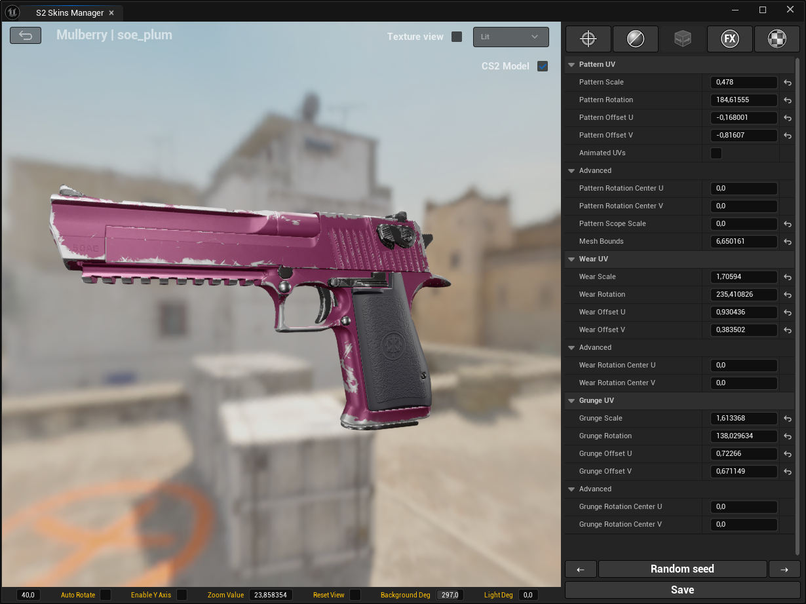
Pattern UV
Pattern Scale — задает масштаб паттерна на поверхности оружия. Меньшие значения увеличивают размер элементов узора, большие — делают рисунок более мелким.
Pattern Rotation — поворачивает паттерн вокруг центра, изменяя ориентацию рисунка на поверхности модели.
Pattern Offset U — смещает паттерн по горизонтальной UV-координате.
Pattern Offset V — смещает паттерн по вертикальной UV-координате.
Animated UVs — включает анимацию UV-координат паттерна. Используется для создания динамических эффектов и движущихся узоров. В дальнейшем можно будет выбрать один из 9 анимированных пресетов.
Pattern Rotation Center U — задаёт точку центра вращения паттерна по оси U.
Pattern Rotation Center V — задаёт точку центра вращения паттерна по оси V.
Pattern Scope Scale — дополнительный параметр масштабирования паттерна. Используется только для оружия SSG08.
Mesh Bounds — масштаб модели оружия. Используется только в triplanar стилях (3 и 6).
Wear UV
Те же самые настройки, что и для паттерна, но для текстуры износа на поверхности скина.
Grunge UV
Те же самые настройки, что и для паттерна, но для текстуры загрязнений и шумов на поверхности скина.
Pattern UV
Pattern Scale — sets the scale of the pattern on the weapon surface. Lower values increase the size of pattern elements, while higher values make the pattern finer.
Pattern Rotation — rotates the pattern around its center, changing the orientation of the design on the model surface.
Pattern Offset U — shifts the pattern along the horizontal UV coordinate.
Pattern Offset V — shifts the pattern along the vertical UV coordinate.
Animated UVs — enables animation of the pattern's UV coordinates. Used to create dynamic effects and moving patterns. You can choose from 9 animated presets.
Pattern Rotation Center U — defines the rotation center of the pattern along the U axis.
Pattern Rotation Center V — defines the rotation center of the pattern along the V axis.
Pattern Scope Scale — an additional pattern scaling parameter. Used only for the SSG08 weapon.
Mesh Bounds — controls the scale of the weapon model. Used only in triplanar styles (3 and 6).
Wear UV
Same settings as for the pattern, but applied to the wear texture on the skin surface.
Grunge UV
Same settings as for the pattern, but applied to the dirt and noise texture on the skin surface.
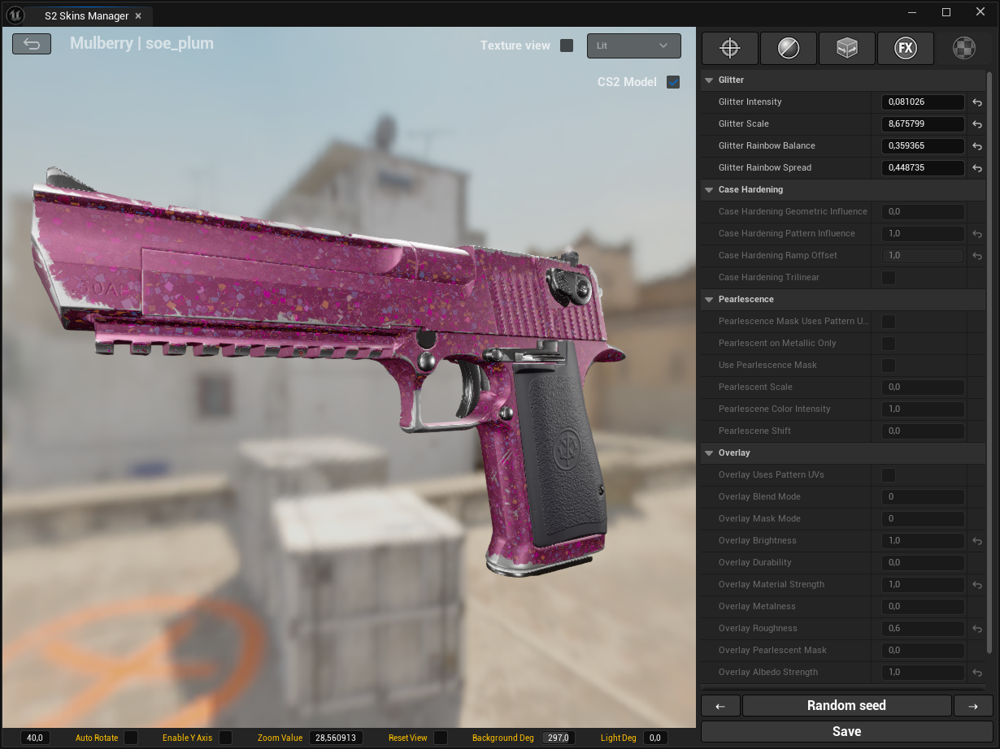
Glitter
Glitter Intensity — управляет интенсивностью эффекта блёсток. Определяет, насколько заметны отражающие частицы на поверхности материала.
Glitter Scale — задаёт масштаб узора блёсток. Большие значения делают частицы более мелкими, меньшие — более крупными.
Glitter Rainbow Balance — регулирует баланс цветного перелива блёсток, смещая эффект в сторону радужных оттенков.
Glitter Rainbow Spread — управляет разбросом радужных цветов в эффекте блёсток, влияя на степень цветового разнообразия.
Case Hardening
Case Hardening Geometric Influence — определяет степень влияния текстуры Culvature на формирование узора закалки металла.
Case Hardening Pattern Influence — задаёт влияние паттерна на распределение эффекта закалки по поверхности.
Case Hardening Ramp Offset — смещает градиент цветового перехода закалки по оси Y, изменяя цвета переливов.
Case Hardening Trilinear — включает режим triplanar для эффекта закалки.
Pearlescence
Pearlescence Mask Uses Pattern UVs — использует UV-координаты паттерна для маски перламутрового эффекта.
Pearlescent on Metallic Only — ограничивает эффект перламутрового перелива только металлическими участками материала.
Use Pearlescence Mask — включает использование пользовательской маски для управления областью действия перламутрового эффекта.
Pearlescent Scale — определяет степень смещения оттенка цвета поверхности в зависимости от угла между поверхностью и направлением камеры.
Pearlescence Color Intensity — управляет интенсивностью цветного перелива перламутрового эффекта.
Pearlescence Shift — смещает оттенок перламутрового перелива, изменяя его цветовой характер.
Overlay
Overlay Uses Pattern UVs — использует UV-координаты паттерна для overlay текстуры.
Overlay Blend Mode — определяет режим смешивания overlay-слоя с базовым материалом. Доступны режимы: прозрачное наложение, замена оттенка и насыщенности, умножение цветов, сложение цветов и наложение слоя поверх albedo.
Overlay Mask Mode — определяет, какая маска используется для ограничения области применения overlay-слоя.
Доступные режимы: 0 (без маски), 1 (базовый слой), 2 (красный канал маски), 3 (зелёный канал маски), 4 (синий канал маски), 5 (комбинация всех RGB каналов), 6 (маска паттерна).
Overlay Brightness — управляет яркостью overlay-слоя.
Overlay Durability — определяет степень устойчивости overlay-слоя к wear-износу.
Overlay Material Strength — задаёт силу влияния overlay-материала на финальный результат.
Overlay Metalness — управляет металличностью overlay-слоя.
Overlay Roughness — задаёт шероховатость overlay-слоя.
Overlay Pearlescent Mask — определяет влияние перламутрового эффекта на overlay-слой.
Overlay Albedo Strength — определяет силу и заметность overlay-текстуры в финальном результате.
Halftone
Spraypaint Halftone — включает эффект полутонов (альфа канал паттерна), имитирующий spraypaint-покрытие.
Halftone in Cavity — ограничивает эффект полутонов текстурой Cavity.
Halftone Cavity Cutoff — задаёт пороговое значение Cavity текстуры, при котором плотность полутонов достигает максимума.
Halftone Rotation Offset X — смещает вращение полутонов для красного канала маски.
Halftone Rotation Offset Y — смещает вращение полутонов для зелёного канала маски.
Halftone Rotation Offset Z — смещает вращение полутонов для синего канала маски.
Halftone Thresholds — влияет на мягкость или резкость границ полутонов.
Halftone Pattern Levels — Влияет на плотность полутонов.
Emissive
Emissive Use Mask Texture — использует текстуру маски для ограничения области подсветки скина. Позволяет применять эффект только к выбранным участкам оружия.
Emissive Intensity — задаёт интенсивность подсветки.
Emissive Mask Power — управляет контрастом и силой влияния маски подсветки.
Emissive Use Pattern — включает режим управления подсветкой через цветовые каналы паттерна. Позволяет задавать разные области свечения на основе масок Base, Red, Green и Blue.
Emissive Black — определяет интенсивность свечения для базового (чёрного) слоя паттерна.
Emissive R — определяет интенсивность свечения для области, заданной красным каналом паттерна.
Emissive G — определяет интенсивность свечения для области, заданной зелёным каналом паттерна.
Emissive B — определяет интенсивность свечения для области, заданной синим каналом паттерна.
Emissive Mask Texture — текстура маски, определяющая форму и распределение свечения.
Emissive Use Texture — включает использование отдельной текстуры свечения вместо процедурных или паттерн-масок.
Emissive Texture — текстура, используемая для формирования рисунка свечения.
Emissive Color — цвет свечения.
Emissive Use Flickering — включает эффект мерцания свечения.
Emissive Flickering Frequency — задаёт частоту мерцания свечения.
Emissive Animated UVs — включает анимацию UV-координат для текстуры подсветки.
Emissive Speed X — скорость анимации UV-координат по оси X.
Emissive Speed Y — скорость анимации UV-координат по оси Y.
Glitter
Glitter Intensity — controls the intensity of the glitter effect. Determines how visible the reflective particles are on the material surface.
Glitter Scale — sets the scale of the glitter pattern. Higher values make particles smaller, while lower values make them larger.
Glitter Rainbow Balance — adjusts the balance of color iridescence in the glitter, shifting the effect toward rainbow tones.
Glitter Rainbow Spread — controls the distribution of rainbow colors in the glitter effect, affecting the level of color variation.
Case Hardening
Case Hardening Geometric Influence — defines how strongly the curvature texture affects the formation of the hardened metal pattern.
Case Hardening Pattern Influence — controls the influence of the pattern on the distribution of the hardening effect across the surface.
Case Hardening Ramp Offset — shifts the gradient of the hardening color transition along the Y axis, altering the color variation.
Case Hardening Trilinear — enables triplanar mode for the hardening effect.
Pearlescence
Pearlescence Mask Uses Pattern UVs — uses the pattern's UV coordinates for the pearlescence mask.
Pearlescent on Metallic Only — restricts the pearlescent effect to metallic areas only.
Use Pearlescence Mask — enables a custom mask to control where the pearlescent effect is applied.
Pearlescent Scale — defines the degree of color shift based on the angle between the surface and the camera direction.
Pearlescence Color Intensity — controls the intensity of the pearlescent color shift.
Pearlescence Shift — shifts the hue of the pearlescent effect, altering its color character.
Overlay
Overlay Uses Pattern UVs — uses the pattern's UV coordinates for the overlay texture.
Overlay Blend Mode — defines how the overlay layer blends with the base material. Available modes include transparency, hue/saturation replacement, multiply, additive blending, and layering over albedo.
Overlay Mask Mode — defines which mask is used to limit the overlay layer.
Available modes: 0 (no mask), 1 (base layer), 2 (red channel), 3 (green channel), 4 (blue channel), 5 (combined RGB), 6 (pattern mask).
Overlay Brightness — controls the brightness of the overlay layer.
Overlay Durability — defines how resistant the overlay layer is to wear.
Overlay Material Strength — controls the influence strength of the overlay material on the final result.
Overlay Metalness — controls the metalness of the overlay layer.
Overlay Roughness — sets the roughness of the overlay layer.
Overlay Pearlescent Mask — defines how the pearlescent effect affects the overlay layer.
Overlay Albedo Strength — controls the visibility and strength of the overlay texture in the final result.
Halftone
Spraypaint Halftone — enables a halftone effect (pattern alpha channel), simulating a spraypaint finish.
Halftone in Cavity — limits the halftone effect using the cavity texture.
Halftone Cavity Cutoff — sets the threshold of the cavity texture at which halftone density reaches its maximum.
Halftone Rotation Offset X — offsets halftone rotation for the red mask channel.
Halftone Rotation Offset Y — offsets halftone rotation for the green mask channel.
Halftone Rotation Offset Z — offsets halftone rotation for the blue mask channel.
Halftone Thresholds — controls the softness or sharpness of halftone edges.
Halftone Pattern Levels — affects halftone density.
Emissive
Emissive Use Mask Texture — uses a mask texture to limit the emissive area of the skin. Allows the effect to be applied only to selected parts of the weapon.
Emissive Intensity — sets the intensity of the emission.
Emissive Mask Power — controls the contrast and influence strength of the emissive mask.
Emissive Use Pattern — enables emissive control via pattern color channels. Allows defining different emission areas using Base, Red, Green, and Blue masks.
Emissive Black — sets emission intensity for the base (black) pattern layer.
Emissive R — sets emission intensity for the area defined by the red pattern channel.
Emissive G — sets emission intensity for the area defined by the green pattern channel.
Emissive B — sets emission intensity for the area defined by the blue pattern channel.
Emissive Mask Texture — the mask texture that defines the shape and distribution of the emission.
Emissive Use Texture — enables the use of a dedicated emissive texture instead of procedural or pattern-based masks.
Emissive Texture — the texture used to define the emission pattern.
Emissive Color — the emission color.
Emissive Use Flickering — enables a flickering emission effect.
Emissive Flickering Frequency — sets the flickering frequency.
Emissive Animated UVs — enables UV animation for the emissive texture.
Emissive Speed X — UV animation speed along the X axis.
Emissive Speed Y — UV animation speed along the Y axis.
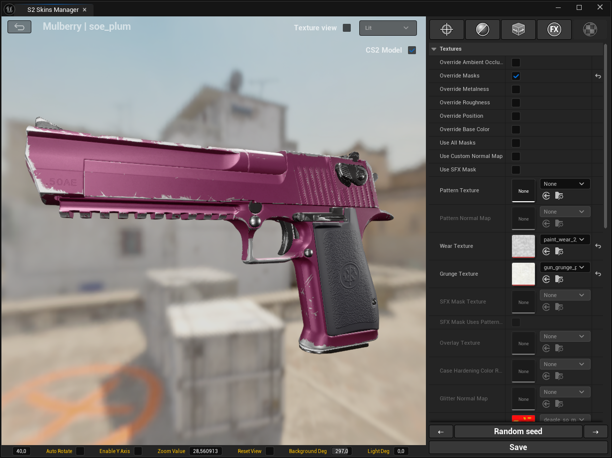
Textures
Override Ambient Occlusion — позволяет переопределить текстуру Ambient Occlusion пользовательской текстурой вместо стандартной.
Override Masks — включает использование пользовательской текстуры масок, заменяя стандартные маски оружия.
Override Metalness — позволяет переопределить текстуру металличности отдельной текстурой.
Override Roughness — позволяет переопределить текстуру шероховатости отдельной текстурой.
Override Position — включает использование пользовательской текстуры Position Map вместо стандартной.
Override Base Color — позволяет заменить базовую текстуру albedo пользовательской текстурой.
Use All Masks — принудительно использует все доступные маски независимо от выбранного стиля и активных эффектов (только для стиля triplanar).
Use Custom Normal Map — включает использование пользовательской текстуры нормалей.
Use SFX Mask — включает использование SFX-маски для управления эффектами, такими как перламутровость, поверхностная закалка и блёстки.
Pattern Texture — текстура паттерна, определяющая распределение цветовых масок и узора на поверхности оружия.
Pattern Normal Map — нормали паттерна, добавляющая дополнительный микрорельеф поверх базовой геометрии.
Wear Texture — текстура износа, определяющая области и характер стирания покрытия.
Grunge Texture — текстура загрязнений и шума, добавляющая визуальную вариативность и детализацию поверхности.
SFX Mask Texture — чёрно-белая маска, определяющая области применения визуальных эффектов.
Overlay Texture — полноцветная текстура, используемая в качестве overlay-слоя поверх базового albedo.
Case Hardening Color Ramp — полноцветная текстура, используемая для формирования градиентов в режиме Case Hardening.
Glitter Normal Map — текстура нормалей, используемая для добавления микрорельефа эффекту блёсток.
Glitter Mask Texture — маска, определяющая области применения эффекта блёсток.
Overridden AO — пользовательская текстура Ambient Occlusion, используемая при включённом Override Ambient Occlusion.
Overridden Roughness — пользовательская текстура шероховатости, заменяющая стандартную roughness-текстуру.
Overridden Metalness — пользовательская текстура металличности, заменяющая стандартную metalness-текстуру.
Overridden Masks — пользовательская текстура масок, заменяющая стандартные маски оружия.
Overridden Base Color Texture — пользовательская базовая текстура albedo, используемая вместо стандартной.
Overridden Position Map — пользовательская текстура Position Map, заменяющая стандартную.
Base Color Texture — базовая albedo текстура оружия, используемая как нижний слой всех скинов.
AO Texture — текстура Ambient Occlusion оружия, добавляющая глубину и затенение в углублениях.
Exponent Texture — текстура шероховатости и металличности оружия.
Weapon Normal Map — текстура нормалей оружия, определяющая микрорельеф поверхности.
Masks Texture — стандартная текстура масок оружия, содержащая цветовые и служебные каналы.
Position Map, Surface Texture — текстуры позиционирования, используемая для трипланарных стилей.
Mesh
Preview 3D Model — модель оружия, используемая для предпросмотра скина в окне виджета.
Textures
Override Ambient Occlusion — allows replacing the default Ambient Occlusion texture with a custom one.
Override Masks — enables the use of a custom mask texture, replacing the default weapon masks.
Override Metalness — allows overriding the metalness texture with a custom one.
Override Roughness — allows overriding the roughness texture with a custom one.
Override Position — enables the use of a custom Position Map instead of the default one.
Override Base Color — allows replacing the base albedo texture with a custom one.
Use All Masks — forces the use of all available masks regardless of the selected style or active effects (triplanar style only).
Use Custom Normal Map — enables the use of a custom normal map.
Use SFX Mask — enables the use of an SFX mask to control effects such as pearlescence, case hardening, and glitter.
Pattern Texture — the pattern texture that defines the distribution of color masks and the pattern layout on the weapon surface.
Pattern Normal Map — a normal map for the pattern, adding additional microdetail on top of the base geometry.
Wear Texture — the wear texture that defines where and how the coating is worn.
Grunge Texture — a dirt and noise texture that adds visual variation and surface detail.
SFX Mask Texture — a black-and-white mask that defines where visual effects are applied.
Overlay Texture — a full-color texture used as an overlay layer on top of the base albedo.
Case Hardening Color Ramp — a full-color texture used to generate gradients in Case Hardening mode.
Glitter Normal Map — a normal map used to add microdetail to the glitter effect.
Glitter Mask Texture — a mask that defines where the glitter effect is applied.
Overridden AO — a custom Ambient Occlusion texture used when Override Ambient Occlusion is enabled.
Overridden Roughness — a custom roughness texture that replaces the default one.
Overridden Metalness — a custom metalness texture that replaces the default one.
Overridden Masks — a custom mask texture that replaces the default weapon masks.
Overridden Base Color Texture — a custom base albedo texture used instead of the default one.
Overridden Position Map — a custom Position Map that replaces the default one.
Base Color Texture — the base albedo texture of the weapon, used as the underlying layer for all skins.
AO Texture — the weapon's Ambient Occlusion texture, adding depth and shadowing in recessed areas.
Exponent Texture — a texture that defines roughness and metalness properties.
Weapon Normal Map — the weapon's normal map, defining surface microdetail.
Masks Texture — the default weapon mask texture containing color and utility channels.
Position Map, Surface Texture — positioning textures used for triplanar styles.
Mesh
Preview 3D Model — the weapon model used for previewing the skin in the widget viewport.

- Кнопка возврата (Back) — возвращает пользователя к списку скинов.
- Падающее меню — переключатель режима отображения (Lit, Roughness, Metallic и др.).
- Окно предпросмотра — реалтайм-отображение материала и всех изменений. Поддержка вращения, зума и смены угла обзора
- Основные настройки материала
- Параметры отображения материала — настройка Roughness / Metalness
- Настройка UV паттернов и потертостей
- Текстуры.
- Запекание материала.
- Панель управления камерой.
- Change Seed — генерация случайного UV для паттерна.
- Bake — сохранение финального Material Instance для дальнейшего использования.
- Back Button — returns the user to the skin list.
- Dropdown Menu — switches the display mode (Lit, Roughness, Metallic, etc.).
- Preview Window — real-time display of the material and all changes. Supports rotation, zoom, and camera angle adjustment.
- Core Material Settings
- Material Display Parameters — Roughness / Metalness settings
- UV Pattern and Wear Settings
- Textures
- Material Baking
- Camera Controls
- Change Seed — generates a random UV layout for the pattern.
- Bake — saves the final Material Instance for further use.
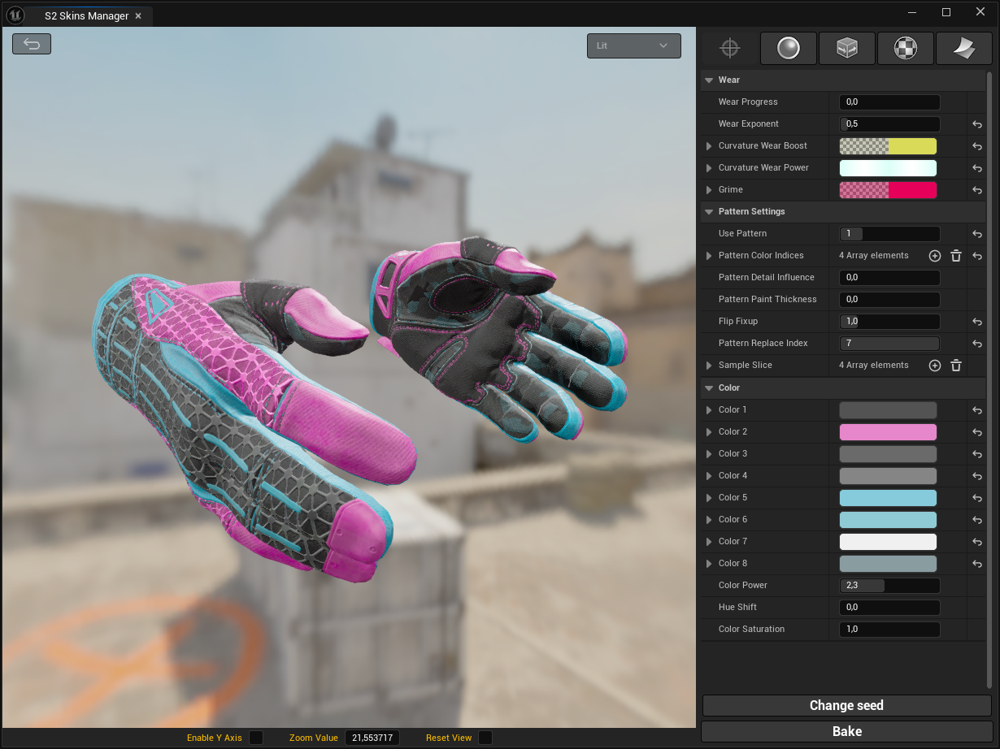
Wear
Wear Progress — задаёт общий уровень износа перчаток. Влияет на степень повреждений, выцветание, загрязнение и проявление потертостей.
Wear Exponent — управляет кривой распределения износа. Меньшие значения делают износ более равномерным, большие — концентрируют его в отдельных зонах.
Curvature Wear Boost — усиливает износ на рёбрах и выступающих частях геометрии. Используется для подчёркивания формы перчаток.
Curvature Wear Power — задаёт степень влияния кривизны поверхности на износ. Высокие значения делают износ более локализованным на острых гранях.
Grime — определяет интенсивность загрязнений и налёта, добавляемых поверх материала даже при низком уровне износа.
Pattern Settings
Use Pattern — использование паттерна для формирования цвета и деталей поверхности.
Use Pattern = 0 — Pattern Disabled
— паттерн полностью отключён.
Use Pattern = 1 — Pattern Replace (Selective Replacement)
— паттерн используется как замена одного конкретного цвета палитры.
— цвет, указанный в Pattern Replace Index, исключается из палитры и заменяется паттерном.
— остальные цвета палитры остаются нетронутыми.
Use Pattern = 2 — Raw Pattern (Unfiltered Pattern)
— паттерн используется как есть, без привязки к палитре.
— Pattern Color Indices не используются.
Use Pattern = 3 — Pattern Overlay (Full Palette Modulation)
— паттерн применяется ко всей палитре целиком.
— каждый цвет палитры смешивается с паттерном, а не заменяется выборочно.
Pattern Color Indices — массив индексов, определяющий, какие цвета палитры используются для каждого цветового канала паттерна.
Pattern Detail Influence — управляет тем, насколько паттерн влияет на микродетализацию поверхности и смешивание слоёв.
Pattern Paint Thickness — задаёт виртуальную толщину слоя краски паттерна. Влияет на затенение, нормали и взаимодействие с износом.
Flip Fixup — коррекция направления нормалей.
Pattern Replace Index — указывает, какой именно цвет палитры должен быть заменён паттерном в режимах, где паттерн участвует в замене.
Sample Slice — определяет какие слои текстур из массива используются при выборке grunge, detail и detail normal.
Color
Color 1 – Color 8 — палитра цветов, используемая для смешивания паттерна, износа и базового материала.
Color Power — управляет общей яркостью и интенсивностью цветовой палитры.
Hue Shift — сдвигает оттенок всех цветов палитры по цветовому кругу.
Color Saturation — регулирует насыщенность итогового цвета материала.
Wear
Wear Progress — sets the overall wear level of the gloves. Affects the degree of damage, fading, dirt buildup, and scuff visibility.
Wear Exponent — controls the wear distribution curve. Lower values create more uniform wear; higher values concentrate it in specific zones.
Curvature Wear Boost — amplifies wear on edges and protruding parts of the geometry. Used to emphasize the glove shape.
Curvature Wear Power — sets how strongly surface curvature influences wear. Higher values make wear more localized on sharp edges.
Grime — defines the intensity of dirt and grime added on top of the material even at low wear levels.
Pattern Settings
Use Pattern — enables a pattern for forming the surface color and details.
Use Pattern = 0 — Pattern Disabled — the pattern is completely disabled.
Use Pattern = 1 — Pattern Replace (Selective Replacement) — the pattern is used to replace one specific palette color.
— the color specified in Pattern Replace Index is excluded from the palette and replaced by the pattern.
— the remaining palette colors remain unchanged.
Use Pattern = 2 — Raw Pattern (Unfiltered Pattern) — the pattern is used as-is, without palette binding.
— Pattern Color Indices are not used.
Use Pattern = 3 — Pattern Overlay (Full Palette Modulation) — the pattern is applied to the entire palette.
— each palette color blends with the pattern rather than being selectively replaced.
Pattern Color Indices — an array of indices defining which palette colors are used for each color channel of the pattern.
Pattern Detail Influence — controls how strongly the pattern affects surface micro-detail and layer blending.
Pattern Paint Thickness — sets the virtual thickness of the pattern's paint layer. Affects shading, normals, and interaction with wear.
Flip Fixup — corrects normal direction.
Pattern Replace Index — specifies which palette color should be replaced by the pattern in modes where the pattern participates in replacement.
Sample Slice — determines which texture array layers are sampled for grunge, detail, and detail normal.
Color
Color 1 – Color 8 — the color palette used for blending the pattern, wear, and base material.
Color Power — controls the overall brightness and intensity of the color palette.
Hue Shift — shifts the hue of all palette colors along the color wheel.
Color Saturation — adjusts the saturation of the final material color.
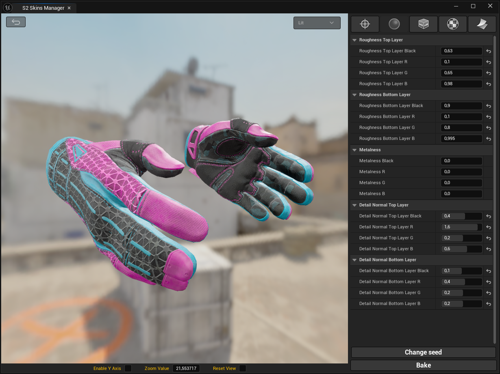
Roughness Top Layer
Roughness Top Layer Black — значение шероховатости верхнего слоя для участков, не попадающих ни под одну цветовую маску (фон).
Roughness Top Layer R — шероховатость верхнего слоя для областей, определённых красным каналом маски материала.
Roughness Top Layer G — шероховатость верхнего слоя для областей, определённых зелёным каналом маски материала.
Roughness Top Layer B — шероховатость верхнего слоя для областей, определённых синим каналом маски материала.
Roughness Bottom Layer
Roughness Bottom Layer Black — шероховатость нижнего слоя (под краской) для немаскированных областей.
Roughness Bottom Layer R — шероховатость нижнего слоя для красной маски.
Roughness Bottom Layer G — шероховатость нижнего слоя для зелёной маски.
Roughness Bottom Layer B — шероховатость нижнего слоя для синей маски.
Metalness
Metalness Black — определяет, будет ли немаскированная часть материала выглядеть как окрашенная поверхность или как металл. Обычно используется для базового диэлектрического материала (кожа, ткань, пластик).
Metalness R — управляет значением Metalness для красного канала маски.
Metalness G — управляет значением Metalness для зелёного канала маски.
Metalness B — управляет значением Metalness для синего канала маски.
Detail Normal Top Layer
Detail Normal Top Layer Black — глубина detail-normal для верхнего слоя вне масок.
Detail Normal Top Layer R — глубина detail-normal для верхнего слоя в красной маске.
Detail Normal Top Layer G — глубина detail-normal для верхнего слоя в зелёной маске.
Detail Normal Top Layer B — глубина detail-normal для верхнего слоя в синей маске.
Detail Normal Bottom Layer
Detail Normal Bottom Layer Black — глубина detail-normal для нижнего слоя вне масок.
Detail Normal Bottom Layer R — глубина detail-normal для нижнего слоя в красной маске.
Detail Normal Bottom Layer G — глубина detail-normal для нижнего слоя в зелёной маске.
Detail Normal Bottom Layer B — глубина detail-normal для нижнего слоя в синей маске.
Эти значения участвуют в формировании изношенных и повреждённых нормалей
Roughness Top Layer
Roughness Top Layer Black — roughness of the top layer for areas not covered by any color mask (background).
Roughness Top Layer R — roughness of the top layer for areas defined by the red channel of the material mask.
Roughness Top Layer G — roughness of the top layer for areas defined by the green channel of the material mask.
Roughness Top Layer B — roughness of the top layer for areas defined by the blue channel of the material mask.
Roughness Bottom Layer
Roughness Bottom Layer Black — roughness of the bottom layer (beneath the paint) for unmasked areas.
Roughness Bottom Layer R — roughness of the bottom layer for the red mask.
Roughness Bottom Layer G — roughness of the bottom layer for the green mask.
Roughness Bottom Layer B — roughness of the bottom layer for the blue mask.
Metalness
Metalness Black — defines whether the unmasked portion of the material appears as a painted surface or as metal. Typically used for the base dielectric material (leather, fabric, plastic).
Metalness R — controls the Metalness value for the red channel mask.
Metalness G — controls the Metalness value for the green channel mask.
Metalness B — controls the Metalness value for the blue channel mask.
Detail Normal Top Layer
Detail Normal Top Layer Black — detail normal depth for the top layer outside masks.
Detail Normal Top Layer R — detail normal depth for the top layer in the red mask.
Detail Normal Top Layer G — detail normal depth for the top layer in the green mask.
Detail Normal Top Layer B — detail normal depth for the top layer in the blue mask.
Detail Normal Bottom Layer
Detail Normal Bottom Layer Black — detail normal depth for the bottom layer outside masks.
Detail Normal Bottom Layer R — detail normal depth for the bottom layer in the red mask.
Detail Normal Bottom Layer G — detail normal depth for the bottom layer in the green mask.
Detail Normal Bottom Layer B — detail normal depth for the bottom layer in the blue mask.
These values contribute to forming worn and damaged normals.
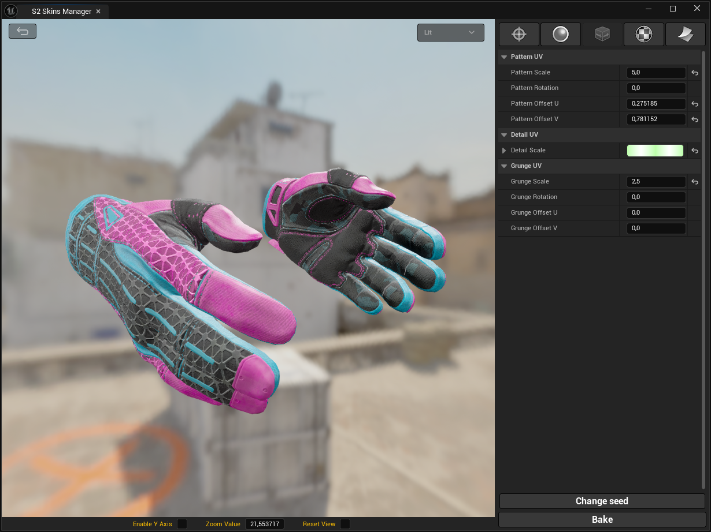
Pattern UV
Pattern Scale — задает масштаб паттерна на перчатках. Больше значение — мельче паттерн.
Pattern Rotation — поворачивает паттерн вокруг центра, изменяя ориентацию рисунка на поверхности перчаток.
Pattern Offset U/V — сдвиг паттерна.
Detail UV
Detail Scale — контролирует плотность мелкого шума и повреждений.
Grunge UV
Grunge Scale — управляет размером грязи и следов износа: мелкая или крупная текстура.
Grunge Rotation — поворачивает текстуру грязи и износа.
Grunge Offset U / V — сдвиг грязи и износа.
Pattern UV
Pattern Scale — sets the scale of the pattern on the gloves. Higher values make the pattern finer.
Pattern Rotation — rotates the pattern around its center, changing the orientation of the design on the glove surface.
Pattern Offset U/V — shifts the pattern position.
Detail UV
Detail Scale — controls the density of fine noise and damage details.
Grunge UV
Grunge Scale — controls the size of dirt and wear marks: fine or coarse texture.
Grunge Rotation — rotates the dirt and wear texture.
Grunge Offset U / V — shifts the dirt and wear texture position.
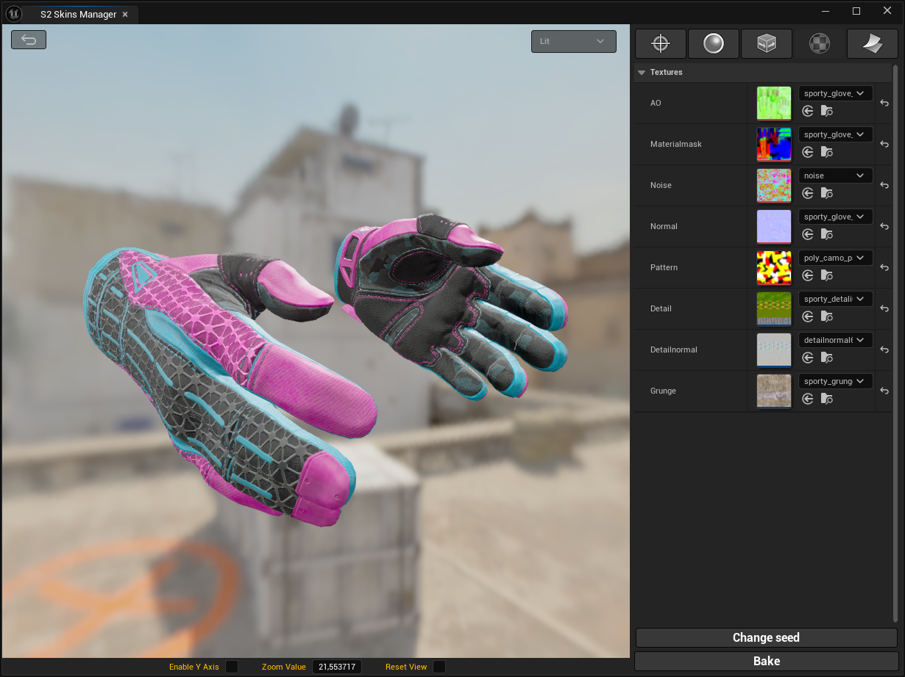
Textures
AO — текстура, влияющая на затемнение, износ и повреждения материала.
Material Mask — текстура, используемая для выбора значений цвета, шероховатости, normal detail, износа и других параметров по каналам R, G и B.
Noise — добавляет случайность и «живость» цвету, убирая плоский вид.
Normal — оригинальная текстура нормалей перчаток, к которой добавляются detail-нормали, износ и рельеф краёв.
Pattern — основная текстура скина.
Detail — добавляет мелкую текстуру, делая поверхность более реалистичной.
Detail Normal — добавляет ощущение мелких неровностей и шероховатости.
Grunge — текстура, отвечающая за грязь, потёртости и следы использования.
Textures
AO — a texture affecting darkening, wear, and material damage.
Material Mask — a texture used to select color values, roughness, normal detail, wear, and other parameters by R, G, and B channels.
Noise — adds randomness and liveliness to the color, eliminating a flat appearance.
Normal — the original glove normal texture, to which detail normals, wear, and edge relief are added.
Pattern — the primary skin texture.
Detail — adds fine texture, making the surface more realistic.
Detail Normal — adds the sense of small bumps and surface roughness.
Grunge — a texture responsible for dirt, scuffs, and signs of use.
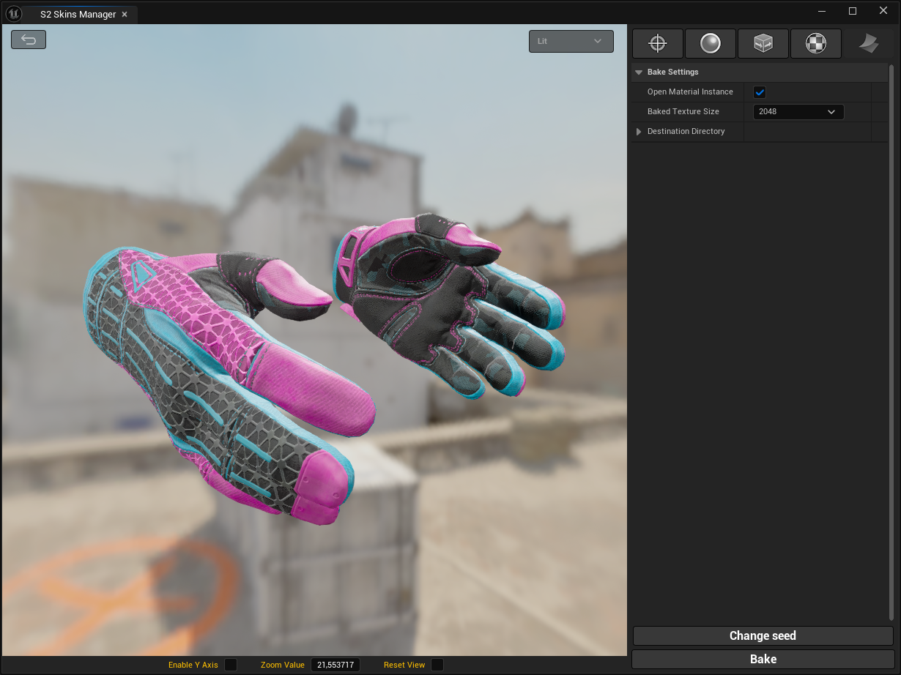
Bake Settings
Open Material Instance — после запекания сразу открывает итоговый Material Instance для проверки.
Baked Texture Size — качество финальных текстур после запекания.
Destination Directory — папка, в которую будут сохранены все запечённые текстуры.
Bake Settings
Open Material Instance — after baking, immediately opens the resulting Material Instance for review.
Baked Texture Size — the quality of the final textures after baking.
Destination Directory — the folder where all baked textures will be saved.
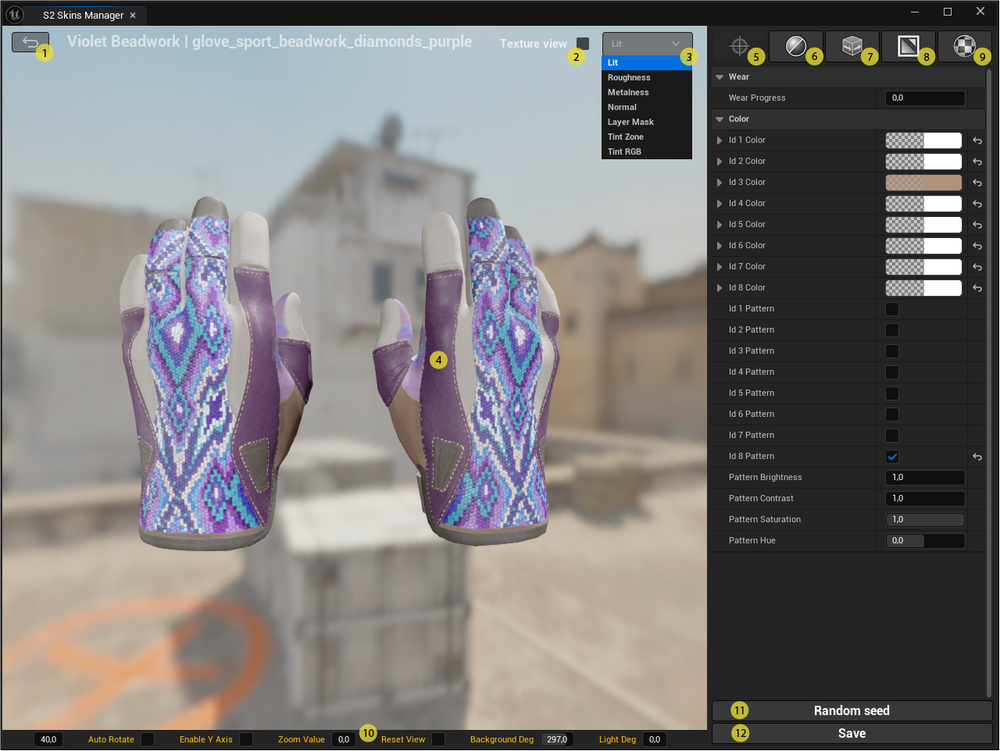
- Кнопка возврата (Back) — возвращает пользователя к списку скинов.
- Флаг “Texture View” — показывает UV развертку.
- Падающее меню — переключатель режима отображения (Lit, Roughness, Metallic и др.).
- Lit — финальный вид перчатки с альбедо, освещением, тинтом и повреждениями.
- Roughness — шероховатость поверхности. Белый = матовая, чёрный = глянцевая.
- Metalness — металлические и неметаллические участки поверхности. Белый = металл, чёрный = кожа или ткань.
- Normal — рельеф поверхности.
- Layer Mask — веса слоёв (RGBA = слои 1–4). Показывает, какой слой нанесён в каждой точке поверхности.
- Tint Zone — визуализация 8 зон тинта в радужных цветах (красный → оранжевый → жёлтый → ... → пурпурный). Каждый цвет — отдельная зона, которую можно перекрасить независимо.
- Tint RGB — итоговый цвет покраски, применённый к перчатке.
- Окно предпросмотра — реалтайм-отображение материала и всех изменений. Поддержка вращения, зума и смены угла обзора
- Основные настройки материала
- Параметры отображения материала — настройка паттерна, Roughness / Metalness
- Настройка UV паттернов и потертостей на всех слоях
- Продвинутые настройки перчаток для всех 4 слоев
- Текстуры скина
- Панель управления камерой.
- Random Seed — генерация случайного UV для паттерна.
- Save — сохранение финального Material Instance для дальнейшего использования.
- Back Button — returns the user to the skin list.
- "Texture View" Toggle — displays the UV layout.
- Dropdown Menu — switches the display mode (Lit, Roughness, Metallic, etc.).
- Lit — the final glove view with albedo, lighting, tint, and damage.
- Roughness — surface roughness. White = matte, black = glossy.
- Metalness — metallic and non-metallic surface areas. White = metal, black = leather or fabric.
- Normal — surface relief.
- Layer Mask — layer weights (RGBA = layers 1–4). Shows which layer is applied at each point on the surface.
- Tint Zone — visualization of 8 tint zones in rainbow colors (red → orange → yellow → ... → purple). Each color is a separate zone that can be recolored independently.
- Tint RGB — the final paint color applied to the glove.
- Preview Window — real-time display of the material and all changes. Supports rotation, zoom, and camera angle adjustment.
- Core Material Settings
- Material Display Parameters — pattern, Roughness / Metalness settings
- UV Pattern and Wear Settings for all layers
- Advanced glove settings for all 4 layers
- Skin Textures
- Camera Controls
- Random Seed — generates a random UV layout for the pattern.
- Save — saves the final Material Instance for further use.
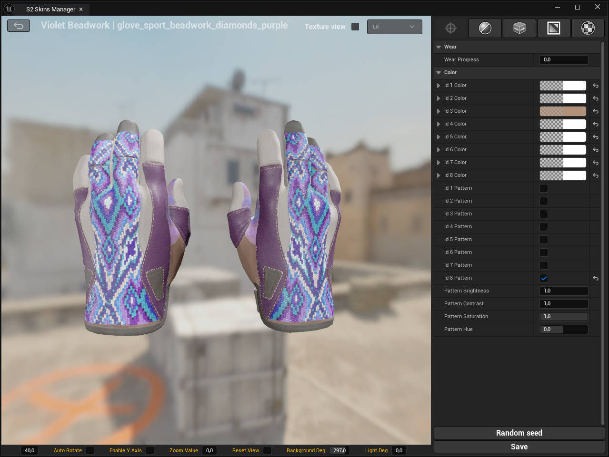
Wear
Wear Progress — Степень износа перчатки. 0 — как новая, 1 — максимально потёртая с царапинами и грязью.
Color
Id 1–8 Color — Цвет и интенсивность окраски для каждой из 8 зон. Цвет задаёт оттенок зоны, прозрачность (A) — насколько сильно этот цвет перекрашивает поверхность.
Id 1–8 Pattern — Отображать ли паттерн в этой зоне. Если выключено — паттерн в зоне скрыт, даже если он включён глобально.
Pattern Brightness — Яркость паттерна.1.0 — без изменений, меньше — темнее, больше — светлее.
Pattern Contrast — Контрастность паттерна. 1.0 — без изменений, меньше — мягче, больше — резче разница светлого и тёмного.
Pattern Saturation — Насыщенность цветов паттерна. 1.0 — без изменений, 0 — полностью чёрно-белый.
Pattern Hue — Сдвиг оттенка паттерна. 0 — без изменений, значения от -1 до 1 соответствуют повороту цвета на -360°..+360° по цветовому кругу.
Wear
Wear Progress — the degree of glove wear. 0 — like new, 1 — maximally worn with scratches and dirt.
Color
Id 1–8 Color — color and tint intensity for each of the 8 zones. The color defines the zone's hue; the alpha (A) determines how strongly this color repaints the surface.
Id 1–8 Pattern — whether to display the pattern in this zone. If disabled — the pattern is hidden in the zone, even if it is enabled globally.
Pattern Brightness — pattern brightness.1.0 — unchanged, lower = darker, higher = brighter.
Pattern Contrast — pattern contrast. 1.0 — unchanged, lower = softer, higher = sharper difference between light and dark.
Pattern Saturation — pattern color saturation. 1.0 — unchanged, 0 — fully grayscale.
Pattern Hue — pattern hue shift. 0 — unchanged, values from -1 to 1 correspond to rotation of -360°..+360° on the color wheel.
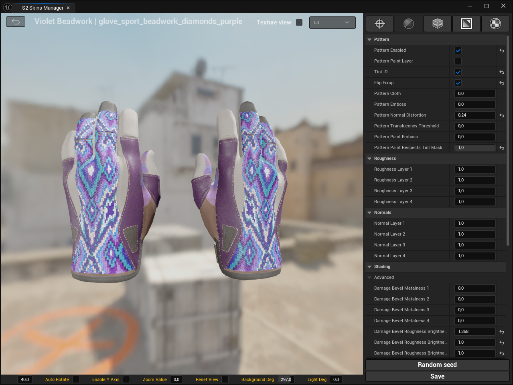
Pattern
Pattern Enabled — Включает отображение рисунка на перчатке. Если выключено — паттерн не виден. Pattern Paint Layer — Режим наложения паттерна. Выключено — паттерн влияет на окраску поверхности изнутри. Включено — паттерн накладывается поверх готового цвета. Tint ID — Включает систему зонального окрашивания. При выключении все настройки цветов зон игнорируются. Flip Fixup — Зеркалит UV по горизонтали. Нужно для правой перчатки, чтобы паттерн ориентировался симметрично левой. Pattern Cloth — Насколько ткань перчатки в области паттерна даёт бархатистый блеск. Pattern Emboss — Высота рельефа по краям паттерна. Чем больше, тем сильнее краска кажется выпуклой. Работает только при включённом Pattern Paint Emboss. Pattern Normal Distortion — Насколько рельеф поверхности искажает расположение паттерна. Выше — рисунок сильнее «огибает» неровности. Pattern Translucency Threshold — Порог прозрачности паттерна для режима выпуклой краски. Пиксели ниже порога не участвуют в рельефе. Pattern Paint Emboss — Режим интерпретации прозрачности паттерна. Выключено — полупрозрачные участки просвечивают (акварель, роспись). Включено — краска становится сплошной и получает рельефные края. Pattern Paint Respects Tint Mask — Учитывать ли маску окраски при наложении паттерна. При значении1 паттерн виден только там, где поверхность может окрашиваться.
Roughness
Roughness Layer 1–4 — Множитель шероховатости для каждого слоя материала. 1.0 — без изменений, меньше — глянцевее, больше — матовее.
Normals
Normal Layer 1–4 — Интенсивность рельефа каждого слоя. 1.0 — без изменений, 0 — поверхность полностью гладкая.
Shading
Damage Bevel Metalness 1–4 — Металличность краёв царапин слоя N. Выше — царапины выглядят как обнажённый металл. Damage Bevel Roughness Brightness 1–4 — Шероховатость краёв царапин слоя N. Меньше1 — края блестят, больше — матовые.
Grime Roughness Brightness 1–4 — Насколько грязь делает поверхность слоя N матовее. Больше 1 — грязные участки теряют блеск сильнее.
Burnishing Metalness 1–4 — Металличность потёртых участков слоя N. Имитирует обнажение металла под покрытием при износе.
Surface Burnishing Roughness Brightness 1–4 — Шероховатость основной поверхности в зонах износа слоя N. Меньше 1 — изношенные места блестят (эффект полировки).
Substrate Burnishing Roughness Brightness 1–4 — Шероховатость нижнего слоя материала в зонах износа. Меньше 1 — подложка блестит при протирании.
Pattern
Pattern Enabled — enables display of the pattern on the glove. If disabled — the pattern is not visible. Pattern Paint Layer — pattern blending mode. Disabled — the pattern affects surface coloring from within. Enabled — the pattern is applied on top of the finished color. Tint ID — enables the zone coloring system. When disabled, all zone color settings are ignored. Flip Fixup — mirrors UVs horizontally. Needed for the right glove so the pattern is oriented symmetrically to the left. Pattern Cloth — how much the glove fabric in the pattern area gives a velvety sheen. Pattern Emboss — height of the relief along pattern edges. The higher the value, the more the paint appears raised. Only works with Pattern Paint Emboss enabled. Pattern Normal Distortion — how much surface relief distorts the pattern placement. Higher values make the design follow surface bumps more strongly. Pattern Translucency Threshold — pattern transparency threshold for the embossed paint mode. Pixels below the threshold do not participate in the relief. Pattern Paint Emboss — pattern transparency interpretation mode. Disabled — semi-transparent areas show through (watercolor, hand-painted). Enabled — the paint becomes solid and gains raised edges. Pattern Paint Respects Tint Mask — whether to consider the tint mask when applying the pattern. At value1, the pattern is only visible where the surface can be tinted.
Roughness
Roughness Layer 1–4 — roughness multiplier for each material layer. 1.0 — unchanged, lower = glossier, higher = more matte.
Normals
Normal Layer 1–4 — relief intensity for each layer. 1.0 — unchanged, 0 — surface is completely smooth.
Shading
Damage Bevel Metalness 1–4 — metalness of scratch edges on layer N. Higher values make scratches look like exposed metal. Damage Bevel Roughness Brightness 1–4 — roughness of scratch edges on layer N. Below1 — edges are shiny, above — matte.
Grime Roughness Brightness 1–4 — how much dirt makes layer N surface more matte. Above 1 — dirty areas lose shine more strongly.
Burnishing Metalness 1–4 — metalness of worn areas on layer N. Simulates exposure of metal beneath the coating during wear.
Surface Burnishing Roughness Brightness 1–4 — roughness of the main surface in wear zones of layer N. Below 1 — worn spots are shiny (polishing effect).
Substrate Burnishing Roughness Brightness 1–4 — roughness of the bottom material layer in wear zones. Below 1 — the substrate shines when rubbed.
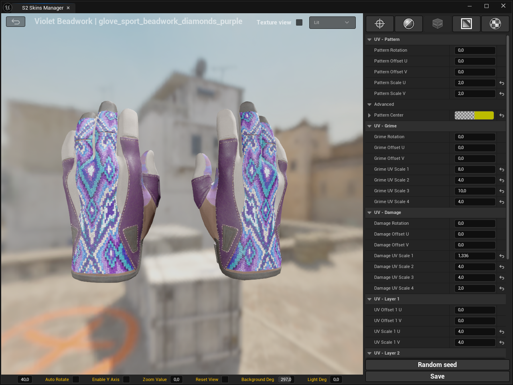
UV - Pattern
Pattern Rotation — Угол поворота паттерна в градусах.0 — без поворота.
Pattern Offset U / V — Сдвиг паттерна по горизонтали / вертикали.
Pattern Scale U / V — Масштаб паттерна по горизонтали / вертикали. Больше — паттерн мельче и повторяется чаще, меньше — крупнее.
Pattern Center — Точка, вокруг которой применяется поворот и масштаб паттерна. По умолчанию центр (0.5, 0.5).
UV - Grime
Grime Rotation — Угол поворота текстуры грязи. Grime Offset U / V — Сдвиг текстуры грязи по горизонтали / вертикали. Grime UV Scale 1–4 — Масштаб тайлинга грязи для каждого слоя материала. Больше — грязь мельче.UV - Damage
Damage Rotation — Угол поворота текстуры царапин. Damage Offset U / V — Сдвиг текстуры царапин по горизонтали / вертикали. Damage UV Scale 1–4 — Масштаб тайлинга царапин для каждого слоя. Больше — царапины мельче.UV - Layer 1–4
UV Offset 1...4 U / V — Сдвиг текстур слоя N по горизонтали / вертикали. UV Scale 1...4 U / V — Масштаб тайлинга текстур слоя N. Больше — текстура мельче и повторяется чаще.UV - Pattern
Pattern Rotation — pattern rotation angle in degrees.0 — no rotation.
Pattern Offset U / V — pattern shift horizontally / vertically.
Pattern Scale U / V — pattern scale horizontally / vertically. Higher = finer pattern and more repetitions, lower = larger.
Pattern Center — the point around which pattern rotation and scaling are applied. Default is center (0.5, 0.5).
UV - Grime
Grime Rotation — rotation angle of the dirt texture. Grime Offset U / V — dirt texture shift horizontally / vertically. Grime UV Scale 1–4 — dirt tiling scale for each material layer. Higher = finer dirt.UV - Damage
Damage Rotation — rotation angle of the scratch texture. Damage Offset U / V — scratch texture shift horizontally / vertically. Damage UV Scale 1–4 — scratch tiling scale for each layer. Higher = finer scratches.UV - Layer 1–4
UV Offset 1...4 U / V — layer N texture shift horizontally / vertically. UV Scale 1...4 U / V — layer N texture tiling scale. Higher = finer texture and more repetitions.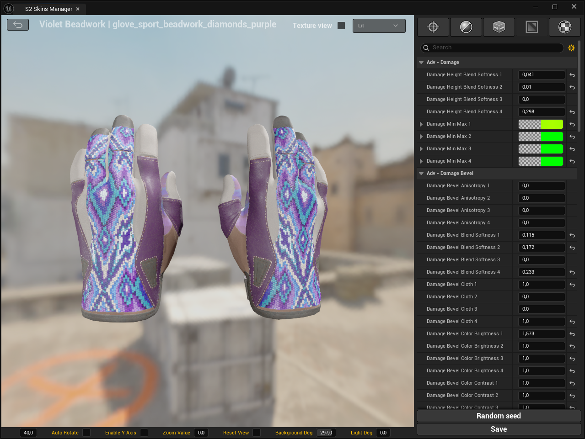
Adv - Damage
Damage Height Blend Softness 1–4 — Плавность перехода между чистой поверхностью и зоной царапин слоя N. Выше — граница размытее. Damage Min Max 1–4 — Диапазон износа для появления царапин на слое N. R = уровень износа, при котором начинаются повреждения, G = уровень полного износа.Adv - Damage Bevel
Damage Bevel Anisotropy 1–4 — Направленность блика на краях царапин.0 — изотропный блик, выше — блик вытягивается вдоль края.
Damage Bevel Blend Softness 1–4 — Плавность краёв царапин слоя N. Выше — края более размытые и мягкие.
Damage Bevel Cloth 1–4 — Насколько ткань даёт бархатистый блеск на краях царапин слоя N.
Damage Bevel Color Brightness 1–4 — Яркость цвета краёв царапин слоя N.
Damage Bevel Color Contrast 1–4 — Контрастность цвета краёв царапин слоя N.
Damage Bevel Color Saturation 1–4 — Насыщенность цвета краёв царапин слоя N. 0 — чёрно-белые края.
Damage Bevel Emboss 1–4 — Высота рельефа на краях царапин слоя N. Выше — края выглядят более выпуклыми.
Damage Bevel Color Tint 1–4 — Цветовой оттенок краёв царапин слоя N. Позволяет окрасить края в другой цвет.
Damage Bevel Blend to Substrate 1–4 — Переходят ли глубокие царапины к нижнему слою материала. Включено — видно то, что «под» поверхностью.
Damage Bevel Use Tint Mask 1–4 — Учитывать ли маску окраски при отображении краёв царапин. Включено — края видны только там, где поверхность может окрашиваться.
Adv - Grime
Grime Translucency 1–4 — Общая видимость грязи на слое N.0 — грязи нет, 1 — грязь полностью видна.
Adv - Burnishing
Burnishing Cloth 1–4 — Насколько потёртые места слоя N дают бархатистый блеск ткани. Burnishing Color Brightness 1–4 — Яркость поверхности в потёртых зонах слоя N. Burnishing Color Contrast 1–4 — Контрастность поверхности в потёртых зонах слоя N. Burnishing Color Saturation 1–4 — Насыщенность цвета потёртых зон слоя N. Burnishing Grime 1–4 — Минимальный уровень грязи в потёртых зонах слоя N. Грязь не исчезает полностью даже на блестящих участках. Burnishing Normal Scale 1–4 — Интенсивность рельефа поверхности в потёртых зонах слоя N. Burnishing Color Tint 1–4 — Цветовой оттенок потёртых зон слоя N.Adv - Surface
Surface Color Brightness 1–4 — Яркость основной текстуры слоя N. Surface Color Contrast 1–4 — Контрастность основной текстуры слоя N. Surface Color Saturation 1–4 — Насыщенность основной текстуры слоя N.0 — чёрно-белая.
Surface Color Tint 1–4 — Цвет и сила окраски основной поверхности слоя N. Прозрачность (A) задаёт интенсивность тинта.
Surface Burnishing Min Max 1–4 — Диапазон износа для эффекта полировки на основной поверхности слоя N. R = начало эффекта, G = максимальная интенсивность.
Surface Grime Min Max 1–4 — Диапазон износа для накопления грязи на основной поверхности слоя N. R = начало появления грязи, G = максимальная загрязнённость.
Adv - Substrate
Substrate Color Brightness 1–4 — Яркость нижнего слоя материала (подложки) слоя N. Substrate Color Contrast 1–4 — Контрастность подложки слоя N. Substrate Color Saturation 1–4 — Насыщенность подложки слоя N. Substrate Composite Color Translucency 1–4 — Насколько сильно зональный цвет окрашивает подложку слоя N.0 — подложка не окрашивается, 1 — полная окраска.
Substrate Color Tint 1–4 — Цветовой оттенок подложки слоя N.
Substrate Burnishing Min Max 1–4 — Диапазон износа для эффекта полировки на подложке слоя N. R = начало эффекта, G = максимальная интенсивность.
Substrate Grime Min Max 1–4 — Диапазон износа для накопления грязи на подложке слоя N. R = начало появления грязи, G = максимальная загрязнённость.
Adv - Damage
Damage Height Blend Softness 1–4 — softness of the transition between the clean surface and the scratch zone of layer N. Higher = more blurred boundary. Damage Min Max 1–4 — wear range for scratches to appear on layer N. R = wear level at which damage begins, G = level of full wear.Adv - Damage Bevel
Damage Bevel Anisotropy 1–4 — directionality of the highlight on scratch edges.0 — isotropic highlight, higher = highlight stretches along the edge.
Damage Bevel Blend Softness 1–4 — softness of scratch edges on layer N. Higher = edges are more blurred and soft.
Damage Bevel Cloth 1–4 — how much fabric gives a velvety sheen on scratch edges of layer N.
Damage Bevel Color Brightness 1–4 — brightness of the scratch edge color on layer N.
Damage Bevel Color Contrast 1–4 — contrast of the scratch edge color on layer N.
Damage Bevel Color Saturation 1–4 — saturation of the scratch edge color on layer N. 0 — grayscale edges.
Damage Bevel Emboss 1–4 — relief height on scratch edges of layer N. Higher = edges appear more raised.
Damage Bevel Color Tint 1–4 — color tint of scratch edges on layer N. Allows tinting the edges a different color.
Damage Bevel Blend to Substrate 1–4 — whether deep scratches transition to the bottom material layer. Enabled — what is "underneath" the surface becomes visible.
Damage Bevel Use Tint Mask 1–4 — whether to consider the tint mask when displaying scratch edges. Enabled — edges are only visible where the surface can be tinted.
Adv - Grime
Grime Translucency 1–4 — overall dirt visibility on layer N.0 — no dirt, 1 — dirt fully visible.
Adv - Burnishing
Burnishing Cloth 1–4 — how much worn spots on layer N give a velvety fabric sheen. Burnishing Color Brightness 1–4 — brightness of the surface in worn zones of layer N. Burnishing Color Contrast 1–4 — contrast of the surface in worn zones of layer N. Burnishing Color Saturation 1–4 — saturation of worn zone colors on layer N. Burnishing Grime 1–4 — minimum dirt level in worn zones of layer N. Dirt does not disappear completely even on shiny areas. Burnishing Normal Scale 1–4 — surface relief intensity in worn zones of layer N. Burnishing Color Tint 1–4 — color tint of worn zones on layer N.Adv - Surface
Surface Color Brightness 1–4 — brightness of the main texture of layer N. Surface Color Contrast 1–4 — contrast of the main texture of layer N. Surface Color Saturation 1–4 — saturation of the main texture of layer N.0 — grayscale.
Surface Color Tint 1–4 — color and tinting strength of the main surface of layer N. Alpha (A) sets tint intensity.
Surface Burnishing Min Max 1–4 — wear range for the polishing effect on the main surface of layer N. R = effect start, G = maximum intensity.
Surface Grime Min Max 1–4 — wear range for dirt accumulation on the main surface of layer N. R = dirt appearance start, G = maximum dirtiness.
Adv - Substrate
Substrate Color Brightness 1–4 — brightness of the bottom material layer (substrate) of layer N. Substrate Color Contrast 1–4 — contrast of the substrate of layer N. Substrate Color Saturation 1–4 — saturation of the substrate of layer N. Substrate Composite Color Translucency 1–4 — how strongly zone color tints the substrate of layer N.0 — substrate is not tinted, 1 — fully tinted.
Substrate Color Tint 1–4 — color tint of the substrate of layer N.
Substrate Burnishing Min Max 1–4 — wear range for the polishing effect on the substrate of layer N. R = effect start, G = maximum intensity.
Substrate Grime Min Max 1–4 — wear range for dirt accumulation on the substrate of layer N. R = dirt appearance start, G = maximum dirtiness.
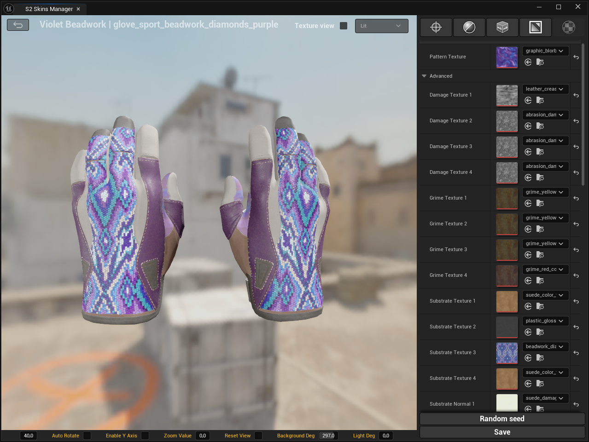
BC7, sRGB вкл).
Damage Texture 1–4 — Маска царапин и потёртостей слоя N. Только R-канал — где светлее, там больше повреждений (компрессия: Grayscale, sRGB выкл).
Grime Texture 1–4 — Текстура грязи и пыли слоя N. RGB = цвет грязи, накладываемой на изношенные участки (компрессия: BC7, sRGB вкл).
Substrate Texture 1–4 — Нижний слой материала (кожа, пластик, ткань), просвечивающий сквозь царапины и износ. RGB = цвет, A = маска окраски зонами (компрессия: BC7, sRGB вкл).
Substrate Normal 1–4 — Карта нормалей нижнего слоя. Задаёт рельеф подложки в изношенных зонах (компрессия: BC7, sRGB выкл).
Substrate Properties 1–4 — PBR-данные подложки. R = min шероховатость, G = металличность, B = cloth-фактор, A = нижний порог диапазона повреждений (компрессия: BC7, sRGB выкл).
Surface Texture 1–4 — Основная текстура поверхности слоя N. RGB = цвет, A = маска окраски зонами (компрессия: BC7, sRGB вкл).
Surface Normal 1–4 — Карта нормалей основной поверхности слоя N. X/Z каналы также хранят диапазон шероховатости (компрессия: BC7, sRGB выкл).
Surface Properties 1–4 — PBR-данные поверхности. R = min шероховатость, G = металличность, B = cloth-фактор, A = верхний порог повреждений (компрессия: BC7, sRGB выкл).
Layer ID — Маска слоёв. R/G/B = веса слоёв 1/2/3, вес слоя 4 вычисляется автоматически. Определяет, какой материал виден в каждой точке (компрессия: BC7, sRGB выкл).
Normal Map — Базовая карта нормалей объекта. Задаёт рельеф меша — швы, складки, тиснение (компрессия: BC7, sRGB выкл).
Object Properties — Запечённые данные объекта. R = AO (тени в углах), G = запечённые повреждения, B = сила износа в пикселе (компрессия: BC7, sRGB выкл).
Pattern Properties — PBR-свойства паттерна. R = металличность, G = шероховатость слоя краски (компрессия: BC7, sRGB выкл).
Tint ID Texture — Карта зон окраски. R-канал кодирует одну из 8 зон, каждую из которых можно покрасить независимо (компрессия: Grayscale, sRGB выкл).
BC7, sRGB on).
Damage Texture 1–4 — scratch and wear mask for layer N. R channel only — lighter areas = more damage (compression: Grayscale, sRGB off).
Grime Texture 1–4 — dirt and dust texture for layer N. RGB = dirt color applied to worn areas (compression: BC7, sRGB on).
Substrate Texture 1–4 — the bottom material layer (leather, plastic, fabric) showing through scratches and wear. RGB = color, A = zone tinting mask (compression: BC7, sRGB on).
Substrate Normal 1–4 — normal map of the bottom layer. Defines substrate relief in worn zones (compression: BC7, sRGB off).
Substrate Properties 1–4 — PBR data for the substrate. R = min roughness, G = metalness, B = cloth factor, A = lower threshold of the damage range (compression: BC7, sRGB off).
Surface Texture 1–4 — main surface texture of layer N. RGB = color, A = zone tinting mask (compression: BC7, sRGB on).
Surface Normal 1–4 — normal map of the main surface of layer N. X/Z channels also store the roughness range (compression: BC7, sRGB off).
Surface Properties 1–4 — PBR data for the surface. R = min roughness, G = metalness, B = cloth factor, A = upper damage threshold (compression: BC7, sRGB off).
Layer ID — layer mask. R/G/B = weights of layers 1/2/3, weight of layer 4 is calculated automatically. Defines which material is visible at each point (compression: BC7, sRGB off).
Normal Map — base normal map of the object. Defines mesh relief — seams, folds, embossing (compression: BC7, sRGB off).
Object Properties — baked object data. R = AO (corner shadows), G = baked damage, B = wear strength per pixel (compression: BC7, sRGB off).
Pattern Properties — PBR properties of the pattern. R = metalness, G = roughness of the paint layer (compression: BC7, sRGB off).
Tint ID Texture — tint zone map. R channel encodes one of 8 zones, each of which can be colored independently (compression: Grayscale, sRGB off).